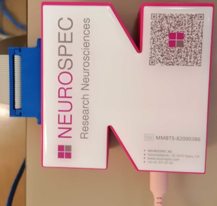
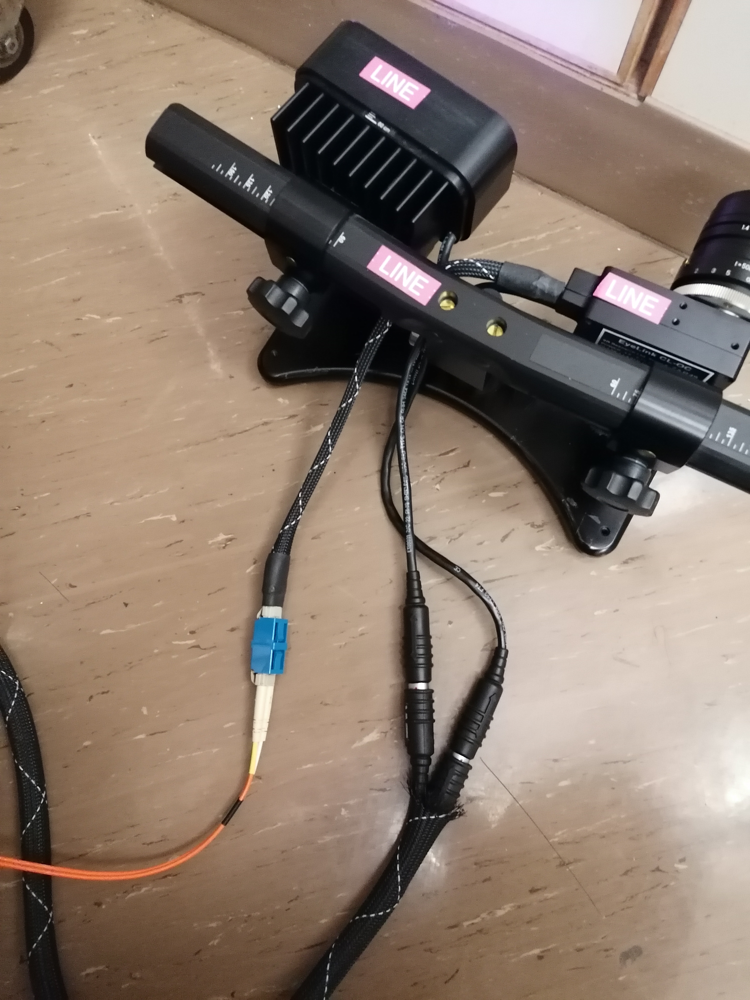

Overall experimental settings
The goal of the experimental setting is to obtain several functional MRI tasks and a long diffusion MRI scan with synchronized physiological recordings, including gas contents with a gas analyzer (GA), eye tracking (ET; including the right eye position, pupil size, blinks, etc.), respiration tracking through a pneumatic respiration belt (RB), and finally MRI-compatible electrocardiogram (ECG).
The overall experimental setting can be summarized as follows:
flowchart TB
subgraph "Scanning Room"
direction TB
sr1[Scanner]
sr2[Cannula]
sr3[RB]
sr4[ECG]
sr5[ET]
end
subgraph "BIOPAC"
direction TB
biopac1[DA100C]
biopac2[ECG100C MRI]
biopac3[AMI100D]
biopac4[STP100D]
end
sr1 --->|Trigger| sb[Syncbox]
sr2 ---> ga[Gas Analyzer]
sr3 --->|"Negative (-)"| biopac1[DA100C]
sr4 ---> biopac2[ECG100C MRI]
sr5 ---> et[Eye Tracker PC]
ga --->|"Channel 3 (CO<sub>2</sub>)"| biopac3
ga --->|"Channel 4 (O<sub>2</sub>)"| biopac3
sb --->|USB| pc1["Stimuli presentation Laptop (███)"]
pc1 <--->|Ethernet| et
pc1 --->|USB| modem[MMBT-S Interface]
pc1 --->|HDMI| display[Projector]
modem --->|25-pin parallel| biopac4
BIOPAC --->|Ethernet| pc2["Physio-recording Laptop (███)"]The above graph can be broken down as follows:
- Signals generating from the Scanning Room. In addition to the MR imagery produced by the scanner, the participant will be wearing the RB, the ECG leads, a nasal cannula to retrieve the expired gases, and finally their right eye will be recorded with the infrared camera of the ET. All those probes and devices carry signals outside the Scanning Room either through cables or tubes, with the access panel as the interface. The access panel also has a connector carrying the trigger signals generated by MR schemes, which indicate important events in the MRI acquisition (typically, one trigger pulse is generated for each new repetition time —TR—, e.g., with every fMRI volume).
-
Syncbox. A NordicLabs Syncbox receives TTL (transistor-transistor logic) triggers from the scanner. This box can just forward the triggers converted into other formats and/or manipulate them (e.g., filter, generate, etc.).

The NordicLabs Syncbox -
Physiology recording hub (BIOPAC). We use the MP160 (BIOPAC Systems, Inc., Goleta, CA, US) to record most of physiological signals. The main unit (MP160) has directly attached several additional modules for the reception and recording of several analogical signals from the Scanning Room (for the case of the RB and the ECG), and indirectly from the gas analyzer (see next item). The physiology recording hub also registers digital signals from the stimuli presentation laptop (███) through the digital signal module (described below).
- Gas analyzer (GA). We use the ML206 (AD Instruments Pty. Ltd., Sydney, Australia). The GA is a device that continuously measures the amount of two gases (CO2 and O2) from a sample fed at the front of the device with a connected tube (this tube comes from inside of the Scanning Room and ends in the nasal cannula the participant is wearing, as shown in the graph).
- Eye tracker (ET). We use the EyeLink 1000 Plus (SR Research Ltd., Ottawa, Canada). Our particular variant «Long Range» is composed of three main elements: (i) inside the scanner's bore, we place an arm that holds an infrared lens and camera sensor on one side and an infrared lamp that illuminates the right eye of the subject through (ii) a special mirror to reflect the infrared spectrum; and (iii) a PC tower that receives the camera recordings, postprocesses the images and calculates the final parameters of interest (position of the eye, pupil size, etc.). The ET is also connected to the Psychopy laptop (███), and communicates bi-directionally with it (e.g., to record logs or receive "messages" such as triggers or task events). The ET is NOT connected to the BIOPAC, with the implication that the ET data is not stored with the other physiological information.
- Stimuli presentation laptop. The Psychopy laptop (███) has the Psychopy software install and with it, the task programs are executed. This experiment consists of three tasks: breath-holding task (BHT), resting-state fMRI (rest), and a quality-control task (QCT). This laptop also stores the data recorded by the ET at the end of the experiment.
- Physiology recording laptop. The AcqKnowledge laptop (███) runs the BIOPAC's AcqKnowledge software and with it, this computer records the signals and allows visualization of the data coming from the BIOPAC. All the inputs to the BIOPAC are multiplexed through into an Ethernet cable that is connected to this laptop.
Getting familiar with the instruments¶
Gas analyzer ML206: documentation and basics¶
The front of the gas analyzer (GA) looks like this:

It is critical to familiarize with the GA's manual to learn about its correct utilization.
Make sure you understand the switching on and off procedures described in these SOPs
Finally, make sure to watch the following video:
Physiological recording hub BIOPAC: documentation and devices¶
Get familiar with the BIOPAC setup and read through the hardware documentation. The system is composed by the main unit (MP160; extreme left in the picture below), to which modules are attached depending on what signals are to be recorded.

Additional modules in our settings are (from left to right in the above picture):
- The SPT100D (solid state relay driver unit) is used to input digital signals that must be recorded.
- The AMI100C unit can receive up to 16 analog signals.
- The DA100C unit records the signal coming from the respiration belt. This unit requires the pressure transducer and amplifier TSD160A unit to be connected at its front. The belt has a pneumatic sensor TSD221-MRI (see product sheet), that is connected to the pressure transducer TSD160A via the longer tube (AFT30-XL 10 m).
- The ECG100C unit records the electrical signal coming from the heart via three ECG leads. This unit requires the amplifier MECMRI-2 unit to be connected at its front.
In addition to the main unit, we have a data modem to feed digital signals into the SPT100D. This modem is the MMBT-S Trigger Interface Box adapter (N-shaped, pink box):

Eye tracker EyeLink 1000 Plus: documentation and basics¶
Get familiar with the setup and read through the ET Instruction Manual.
Thanks to Benedetta Franceschiello!
All the documentation about the ET is derived from Benedetta Franceschiello's user guide. We greatly appreciate her help with the device.
|  |  |
 |
||
|---|---|---|---|---|
| The ET is an EyeLink 1000 Plus (Long Range). The ET is composed of three major elements: the ET arm (left), which holds the lens and camera and an infrared lamp, the Host Computer (middle), and the infrared mirror (right) | ||||
- The ET arm is an articulated support for the infrared camera and lens in one end and with an infrared lamp at the other end. The ET arm is installed inside the Scanning Room, inside the scanner's bore, standing on a transparent plexiglass panel tailored to the scanner's bed rail. Two lengthy cables (black for power and orange for signal) are passed through the access panel and connect the ET arm to the ET computer.
- The ET computer is a standard PC with customized software for the control of the ET.
- The infrared mirror is critical to be able to record the right eye of the participant, and is mounted covering the standard mirror of the coil.
Scanning protocols¶
The study will collect data with two different scanning protocols. Most of what is described in the present SOPs addresses the Reliability Imaging Protocol that will be acquired on the ███ scanner.
Imaging protocol printouts
The final printouts are here:
- Reliability protocol: HCPh_AP, HCPh_PA, HCPh_LR, and HCPh_RL.
- Standard protocol:
- PrismaFit: HCPh_AP_Prisma, HCPh_PA_Prisma, HCPh_LR_Prisma, and HCPh_RL_Prisma.
- VidaFit: HCPh_AP_VidaFit, HCPh_PA_VidaFit, HCPh_LR_VidaFit, and HCPh_RL_VidaFit.
- Vida: HCPh_AP_Vida, HCPh_PA_Vida, HCPh_LR_Vida, and HCPh_RL_Vida.
| Reliability Imaging Protocol (36 sessions \(\times\) one scanner) | mm:ss | Standard Imaging Protocol (12 sessions \(\times\) three scanners) | mm:ss |
|---|---|---|---|
| Head scout | 00:14 | Head scout | 00:14 |
| FoV Manual positioning | 01:00 | FoV Manual positioning | 01:00 |
| T1w (anatomical reference) | 5:41 | T1w (anatomical reference) | 5:41 |
| DWI (\(B_\text{0}\) field mapping) | 00:54 | EPI BOLD (\(B_\text{0}\) field mapping) | 00:30 |
| DWI (dMRI, structural connectivity) | 33:52 | BOLD (single-echo RSfMRI, eyes open) | 20:09 |
| GRE (\(B_\text{0}\) field mapping) | 02:38 | GRE (\(B_\text{0}\) field mapping) | 03:08 |
| BOLD (positive-control task fMRI) | 03:07 | BOLD (multi-echo RSfMRI, eyes open, only ███) | 10:09 |
| EPI BOLD (\(B_\text{0}\) field mapping) | 00:27 | DWI (dMRI, structural connectivity) | 27:31 |
| BOLD (multi-echo RSfMRI, naturalistic movie) | 20:09 | DWI (\(B_\text{0}\) field mapping) | 01:10 |
| BOLD (breath-holding task fMRI) | 06:00 | T2w (anatomical reference) | 08:24 |
| T2w (anatomical reference) | 05:10 | ||
| Total Acquisition Time | 79:12 | Total Acquisition Time | 77:56 |
Stimulation program timings (reliability imaging protocol only)
The stimuli presentation laptop (███) will execute four experiments, which will allow the synchronization of all devices by sending the adequate signals at their predesignated times and also present visual stimuli with the scanner's projector. The lengths of the four Psychopy experiments should be:
task-fixation_dwi➜ 33min 11s,task-qct_bold➜ 2min 38s,task-rest_bold➜ 20min 6s, andtask-bht_bold➜ 5min 41s.